import warnings
warnings.filterwarnings("ignore")
import numpy as np
import pandas as pd
import seaborn as sns
import scipy as sp
import scipy.stats as stats
sns.set(style='whitegrid')
from IPython.display import display
import matplotlib.pyplot as plt
import os
import openpyxl
from sklearn.linear_model import LinearRegression, Ridge, Lasso, ElasticNet
from sklearn.ensemble import RandomForestRegressor
from sklearn.preprocessing import StandardScaler, RobustScaler, MinMaxScaler, OneHotEncoder
from sklearn.pipeline import Pipeline
from sklearn.compose import ColumnTransformer
from sklearn.model_selection import train_test_split, GridSearchCV, cross_val_score
from sklearn.metrics import mean_squared_error
from scipy.signal import butter,filtfilt
from yellowbrick.target import FeatureCorrelation
import timeObjetivo
O desafio proposto tinha como principal objetivo prever quando o filtro está totalmente obstruído criando modelos capazes de determinar com precisão a vida útil remanescente do filtro.
Estrutura do equipamento
A bancada experimental é composta por:
- Bomba;
- Amortecedor;
- Partículas;
- Sensores de vazão;
- Filtro.
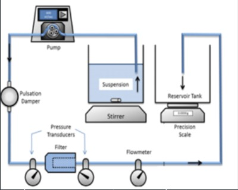
Pré Processamento
É o processo que compreende a preparação, organização e estruturação dos dados.
Nessa etapa foi realizada a junção das bases de dados, a criação de algumas variáveis (“Clogged”, “TTF”, “RUL”) e a filtragem dos dados usando o Butterworth filter, que é um tipo de filtro eletrônico para retirar ruídos e obter frequências mais planas.
Podemos visualizar no código a seguir:
path = os.getcwd()
path += '\\Training'
files = os.listdir(path + '\\Large')
files_csv_large = [f for f in files if f[-3:] == 'csv']
files_csv_large['Sample33.csv', 'Sample34.csv', 'Sample35.csv', 'Sample36.csv', 'Sample37.csv', 'Sample38.csv', 'Sample39.csv', 'Sample40.csv', 'Sample41.csv', 'Sample42.csv', 'Sample43.csv', 'Sample44.csv']def butter_lowpass_filter(data, cutoff, fs, order,nyq=5):
normal_cutoff = cutoff / nyq
b, a = butter(order, normal_cutoff, btype='low', analog=False)
y = filtfilt(b, a, data)
return ydf_large = pd.DataFrame()
count = 33
for f in files_csv_large:
data = pd.read_csv('Training/Large/' + f)
data['Sample']=count
data.loc[:,'Differential_Pressure(psi)'] = (data['Upstream_Pressure(psi)'] - data['Downstream_Pressure(psi)'])
data['Clogged'] = np.where(((data['Upstream_Pressure(psi)'] - data['Downstream_Pressure(psi)'])>=20)
, 1, 0)
data['TTF'] = data['Time(s)'].values[data['Clogged'].idxmax()]
data['RUL'] = data['TTF'] - data['Time(s)']
data['Filtered_Up'] = butter_lowpass_filter(data['Upstream_Pressure(psi)'].loc[data['Sample'] == count], cutoff=0.01, fs=1/0.1, order=3,nyq=2)
data['Filtered_Down'] = butter_lowpass_filter(data['Downstream_Pressure(psi)'].loc[data['Sample'] == count], cutoff=0.01, fs=1/0.1, order=2,nyq=2)
data['Filtered_Flow'] = butter_lowpass_filter(data['Flow_Rate(ml/m)'].loc[data['Sample'] == count], cutoff=0.1, fs=1/0.1, order=4,nyq=2)
data['Filtered_Diff'] = butter_lowpass_filter(data['Differential_Pressure(psi)'].loc[data['Sample'] == count], cutoff=0.01, fs=1/0.1, order=3,nyq=2)
data['Clogged_Filter'] = np.where(((data['Filtered_Up'] - data['Filtered_Down'])>=20)
, 1, 0)
data['TTF_Filter'] = data['Time(s)'].values[data['Clogged_Filter'].idxmax()]
data['RUL_Filter'] = data['TTF_Filter'] - data['Time(s)']
data['Particle_Large'] = 1
if count <= 36:
data['Solid_Ratio'] = 0.4
elif 37<= count <=40:
data['Solid_Ratio'] = 0.425
else:
data['Solid_Ratio'] = 0.45
df_large = df_large.append(data)
count+=1
files = os.listdir(path + '\\Small')
files_csv_small = [f for f in files if f[-3:] == 'csv']
files_csv_small['Sample01.csv', 'Sample02.csv', 'Sample03.csv', 'Sample04.csv', 'Sample05.csv', 'Sample06.csv', 'Sample07.csv', 'Sample08.csv', 'Sample09.csv', 'Sample10.csv', 'Sample11.csv', 'Sample12.csv']df_small = pd.DataFrame()
count = 1
for f in files_csv_small:
data = pd.read_csv('Training/Small/' + f)
data['Sample']=count
data.loc[:,'Differential_Pressure(psi)'] = (data['Upstream_Pressure(psi)'] - data['Downstream_Pressure(psi)'])
data['Clogged'] = np.where(((data['Upstream_Pressure(psi)'] - data['Downstream_Pressure(psi)'])>=20)
, 1, 0)
data['TTF'] = data['Time(s)'].values[data['Clogged'].idxmax()]
data['RUL'] = data['TTF'] - data['Time(s)']
data['Filtered_Up'] = butter_lowpass_filter(data['Upstream_Pressure(psi)'].loc[data['Sample'] == count], cutoff=0.01, fs=1/0.1, order=3,nyq=2)
data['Filtered_Down'] = butter_lowpass_filter(data['Downstream_Pressure(psi)'].loc[data['Sample'] == count], cutoff=0.01, fs=1/0.1, order=2,nyq=2)
data['Filtered_Flow'] = butter_lowpass_filter(data['Flow_Rate(ml/m)'].loc[data['Sample'] == count], cutoff=0.1, fs=1/0.1, order=4,nyq=2)
data['Filtered_Diff'] = butter_lowpass_filter(data['Differential_Pressure(psi)'].loc[data['Sample'] == count], cutoff=0.01, fs=1/0.1, order=3,nyq=2)
data['Clogged_Filter'] = np.where(((data['Filtered_Up'] - data['Filtered_Down'])>=20)
, 1, 0)
data['TTF_Filter'] = data['Time(s)'].values[data['Clogged_Filter'].idxmax()]
data['RUL_Filter'] = data['TTF_Filter'] - data['Time(s)']
data['Particle_Large'] = 0
if count <= 4:
data['Solid_Ratio'] = 0.4
elif 5<= count <=8:
data['Solid_Ratio'] = 0.425
else:
data['Solid_Ratio'] = 0.45
df_small = df_small.append(data)
count+=1df_train = pd.concat([df_small, df_large])df_profiles = pd.read_excel(path + '\\Training Operation Profiles of Samples.xlsx')Análise Descritiva
Processo de examinar os dados previamente afim de obter um entendimento básico sobre os dados e relações existentes entre as variáveis.
- Gráfico 1
plt.figure(figsize=(20,10))
for value in df_large['Sample'].unique():
if value == 36 or value == 40 or value == 44:
plt.plot(df_large['Time(s)'].loc[df_large['Sample'] == value], df_large['Upstream_Pressure(psi)'].loc[df_large['Sample'] == value], label='Up_Pressure(psi) - Sample'+str(value))
plt.plot(df_large['Time(s)'].loc[df_large['Sample'] == value], df_large['Downstream_Pressure(psi)'].loc[df_large['Sample'] == value], label='Down_Pressure(psi) - Sample'+str(value))
plt.legend(fontsize=20)
plt.xlabel('Time(s)',fontsize=20)
plt.ylabel('Pressure(psi)',fontsize=20)
plt.title('Dados de Treino (Large) - Solid Ratio (40%, 42,5% e 45%)' ,fontsize=20)
plt.tick_params(labelsize=15)
plt.show()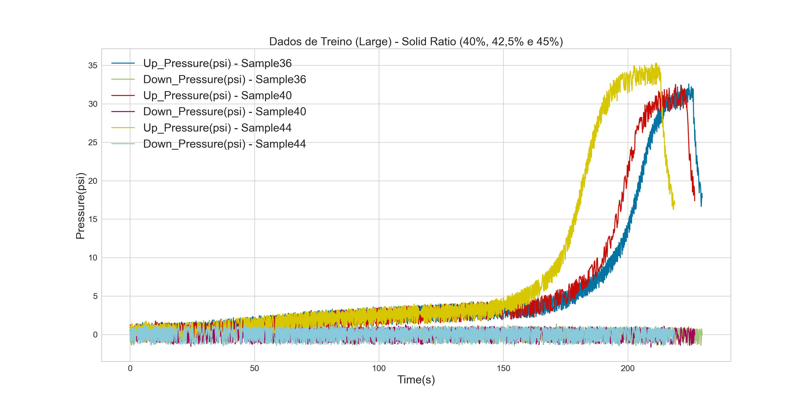
- Gráfico 2
plt.figure(figsize=(20,10))
for value in df_large['Sample'].unique():
if 33<=value<=36:
plt.plot(df_large['Time(s)'].loc[df_large['Sample'] == value], df_large['Upstream_Pressure(psi)'].loc[df_large['Sample'] == value], label='Up_Pressure(psi) - Sample'+str(value))
plt.plot(df_large['Time(s)'].loc[df_large['Sample'] == value], df_large['Downstream_Pressure(psi)'].loc[df_large['Sample'] == value], label='Down_Pressure(psi) - Sample'+str(value))
plt.legend(fontsize=20)
plt.xlabel('Time(s)',fontsize=20)
plt.ylabel('Pressure(psi)',fontsize=20)
plt.title('Dados de Treino (Large) - 40% Solid Ratio',fontsize=20)
plt.tick_params(labelsize=15)
plt.show()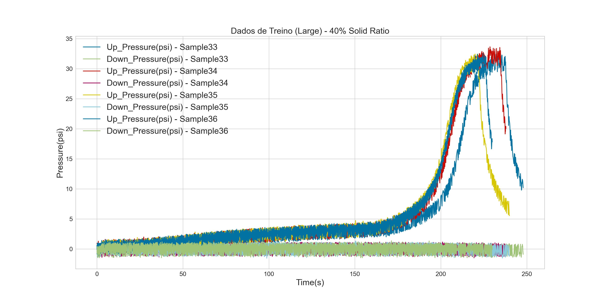
- Gráfico 3
plt.figure(figsize=(20,10))
for value in df_small['Sample'].unique():
if value == 1 or value == 5 or value == 9:
plt.plot(df_small['Time(s)'].loc[df_small['Sample'] == value], df_small['Upstream_Pressure(psi)'].loc[df_small['Sample'] == value], label='Up_Pressure(psi) - Sample'+str(value))
plt.plot(df_small['Time(s)'].loc[df_small['Sample'] == value], df_small['Downstream_Pressure(psi)'].loc[df_small['Sample'] == value], label='Down_Pressure(psi) - Sample'+str(value))
plt.legend(fontsize=20)
plt.xlabel('Time(s)',fontsize=20)
plt.ylabel('Pressure(psi)',fontsize=20)
plt.title('Dados de Treino (Small) - Solid Ratio (40%, 42,5% e 45%)' ,fontsize=20)
plt.tick_params(labelsize=15)
plt.show()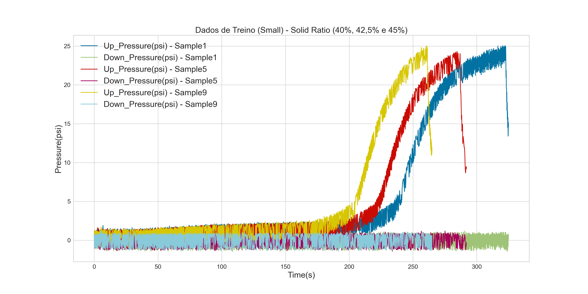
- Gráfico 4
plt.figure(figsize=(20,10))
for value in df_small['Sample'].unique():
if 1<=value<=4:
plt.plot(df_small['Time(s)'].loc[df_small['Sample'] == value], df_small['Upstream_Pressure(psi)'].loc[df_small['Sample'] == value], label='Up_Pressure(psi) - Sample'+str(value))
plt.plot(df_small['Time(s)'].loc[df_small['Sample'] == value], df_small['Downstream_Pressure(psi)'].loc[df_small['Sample'] == value], label='Down_Pressure(psi) - Sample'+str(value))
plt.legend(fontsize=20)
plt.xlabel('Time(s)',fontsize=20)
plt.ylabel('Pressure(psi)',fontsize=20)
plt.title('Dados de Treino (Small) - 40% Solid Ratio',fontsize=20)
plt.tick_params(labelsize=15)
plt.show()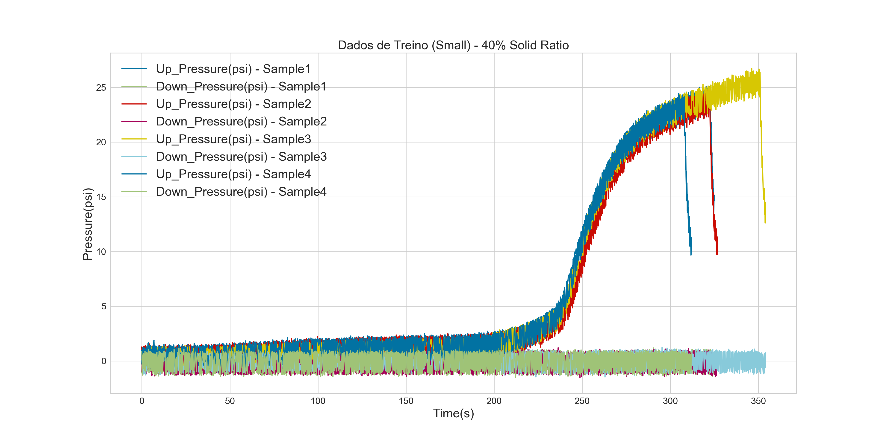
- Gráfico 5
plt.figure(figsize=(20,10))
for value in df_train['Sample'].unique():
if value ==1 or value == 5 or value == 10:
plt.plot(df_train['Time(s)'].loc[df_train['Sample'] == value], df_train['Upstream_Pressure(psi)'].loc[df_train['Sample'] == value], label='Up_Pressure(psi) - Sample'+str(value))
elif value ==33 or value == 38 or value == 42:
plt.plot(df_train['Time(s)'].loc[df_train['Sample'] == value], df_train['Upstream_Pressure(psi)'].loc[df_train['Sample'] == value], label='Up_Pressure(psi) - Sample'+str(value))
plt.legend(fontsize=20)
plt.xlabel('Time(s)',fontsize=20)
plt.ylabel('Pressure(psi)',fontsize=20)
plt.title('Dados de Treino Small x Large ',fontsize=20)
plt.tick_params(labelsize=15)
plt.show()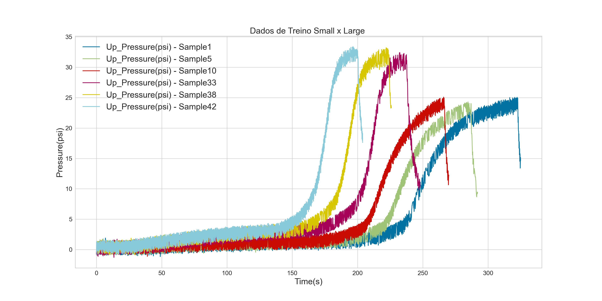
- Gráfico 6
plt.figure(figsize=(20,10))
for value in df_train['Sample'].unique():
if value ==9:
plt.plot(df_train['Time(s)'].loc[df_train['Sample'] == value], df_train['Upstream_Pressure(psi)'].loc[df_train['Sample'] == value], label='Up_Pressure(psi) - Small - Sample'+str(value))
elif value == 41:
plt.plot(df_train['Time(s)'].loc[df_train['Sample'] == value], df_train['Upstream_Pressure(psi)'].loc[df_train['Sample'] == value], label='Up_Pressure(psi) - Large - Sample'+str(value))
plt.axhline(y=20, xmin=0.5, xmax=1.2)
plt.legend(fontsize=20)
plt.xlabel('Time(s)',fontsize=20)
plt.ylabel('Pressure(psi)',fontsize=20)
plt.title('Dados de Treino Small x Large - 40% Solid Ratio',fontsize=20)
plt.tick_params(labelsize=15)
plt.show()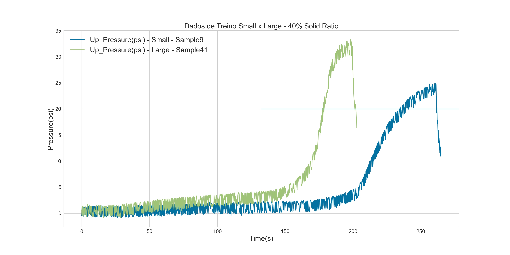
- Gráfico 7
plt.figure(figsize=(20,10))
#sns.set_style('darkgrid')
#sns.set_theme(style="whitegrid")
ax = sns.boxplot(x=df_train["Filtered_Up"])
plt.title("BoxPlot Filtered_Up", fontsize = 20)
plt.show(ax)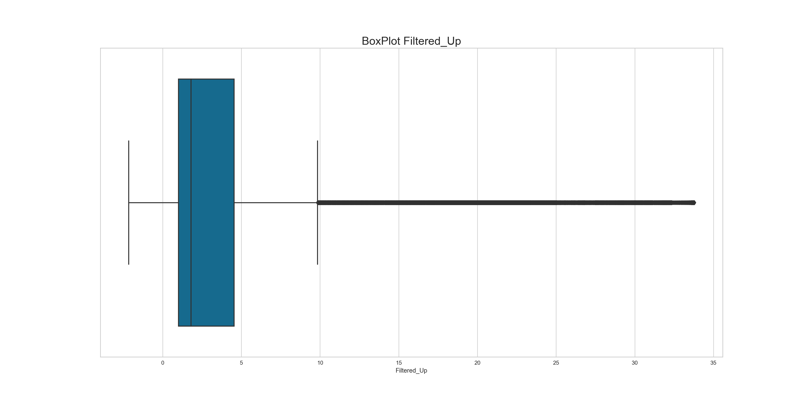
- Gráfico 8
plt.figure(figsize=(20,10))
for value in df_train['Sample'].unique():
if value == 34 or value == 2:
plt.plot(df_train['Time(s)'].loc[df_train['Sample'] == value], df_train['Upstream_Pressure(psi)'].loc[df_train['Sample'] == value], label='Up_Pressure(psi) - Sample'+str(value))
plt.plot(df_train['Time(s)'].loc[df_train['Sample'] == value], df_train['Differential_Pressure(psi)'].loc[df_train['Sample'] == value], label='Differential_Pressure(psi) - Sample'+str(value))
plt.legend(fontsize=20)
plt.xlabel('Time(s)',fontsize=20)
plt.ylabel('Pressure(psi)',fontsize=20)
plt.title('Dados de Treino Large x Small - 40% Solid Ratio',fontsize=20)
plt.tick_params(labelsize=15)
plt.show()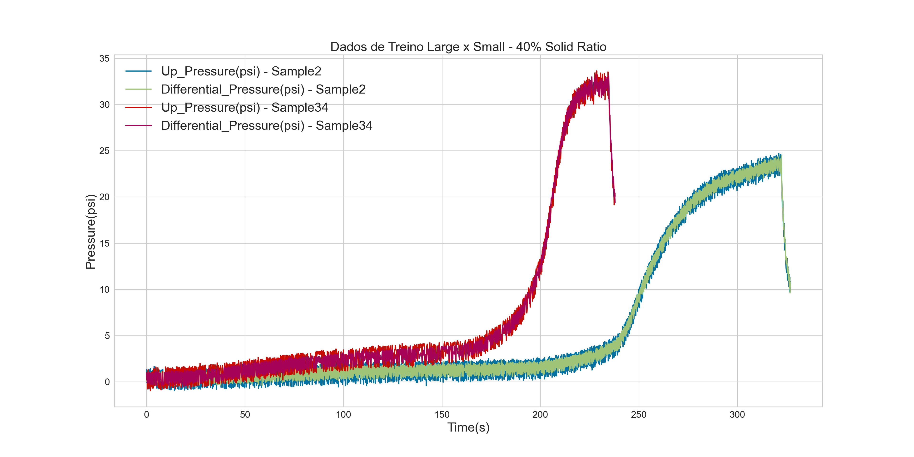
- Gráfico 9
plt.figure(figsize=(20,10))
for value in df_train['Sample'].unique():
if value == 34 or value == 4:
plt.plot(df_train['Time(s)'].loc[df_train['Sample'] == value], df_train['Differential_Pressure(psi)'].loc[df_train['Sample'] == value], label='Differential_Pressure(psi) - Sample'+str(value))
plt.plot(df_train['Time(s)'].loc[df_train['Sample'] == value], df_train['Filtered_Diff'].loc[df_train['Sample'] == value], label='Filtered_Diff - Sample'+str(value))
plt.legend(fontsize=20)
plt.xlabel('Time(s)',fontsize=20)
plt.ylabel('Pressure(psi)',fontsize=20)
plt.title('Dados de Treino Large x Small com Filtro - 40% Solid Ratio',fontsize=20)
plt.tick_params(labelsize=15)
plt.show()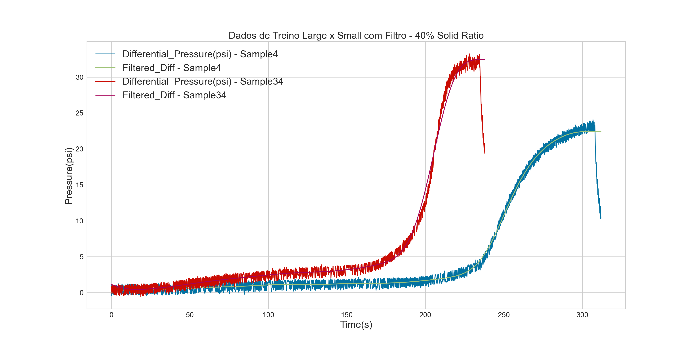
- Gráfico 10
plt.figure(figsize=(20,10))
for value in df_train['Sample'].unique():
if value == 4 or value == 8 or value == 12:
plt.plot(df_train['Time(s)'].loc[df_train['Sample'] == value], df_train['Upstream_Pressure(psi)'].loc[df_train['Sample'] == value], label='Up_Pressure(psi) - Sample'+str(value))
plt.plot(df_train['Time(s)'].loc[df_train['Sample'] == value], df_train['Filtered_Up'].loc[df_train['Sample'] == value], label='Filtered_Up(psi) - Sample'+str(value))
plt.legend(fontsize=20)
plt.xlabel('Time(s)',fontsize=20)
plt.ylabel('Pressure(psi)',fontsize=20)
plt.title('Dados de Treino Small - Solid Ratio (40%, 42,5% e 45%)',fontsize=20)
plt.tick_params(labelsize=15)
plt.show()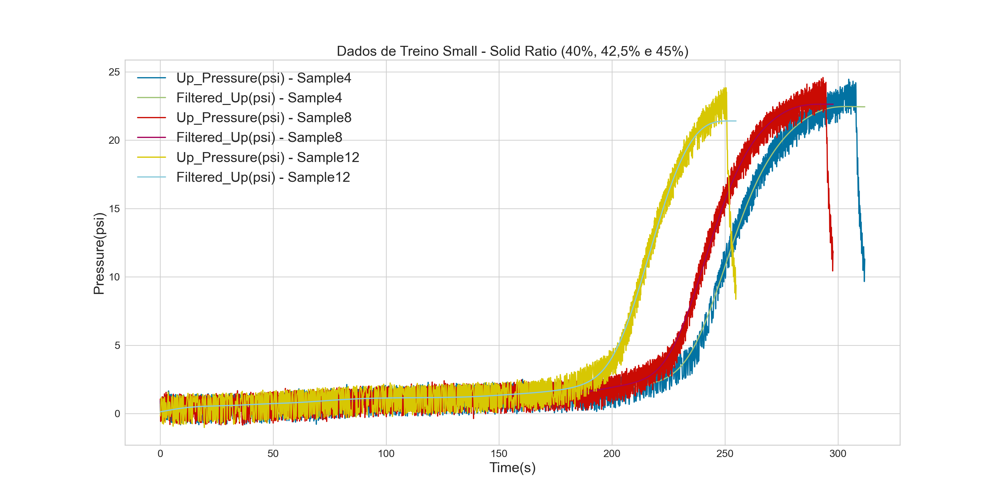
- Gráfico 11
plt.figure(figsize=(20,10))
for value in df_train['Sample'].unique():
if value == 4 or value == 8 or value == 12:
plt.plot(df_train['Time(s)'].loc[df_train['Sample'] == value], df_train['Flow_Rate(ml/m)'].loc[df_train['Sample'] == value], label='Flow_Rate(ml/m) - Sample'+str(value))
#plt.plot(df_train['Time(s)'].loc[df_train['Sample'] == value], df_train['Filtered_Flow'].loc[df_train['Sample'] == value], label='Down_Pressure(psi) - Sample'+str(value))
plt.legend(fontsize=20)
plt.xlabel('Time(s)',fontsize=20)
plt.ylabel('Flow_Rate(ml/m)',fontsize=20)
plt.title('Dados de Treino Small - Solid Ratio (40%, 42,5% e 45%)',fontsize=20)
plt.tick_params(labelsize=15)
plt.show()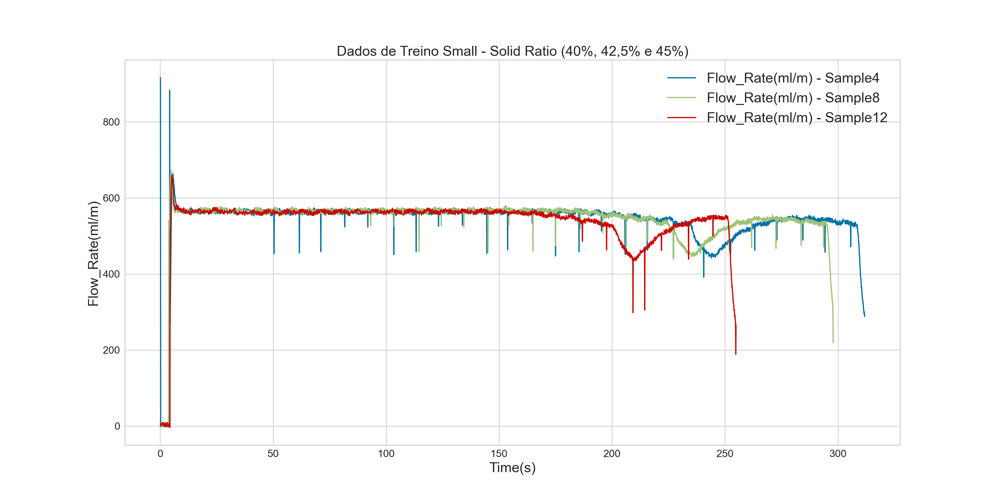
- Gráfico 12
plt.figure(figsize=(20,10))
for value in df_train['Sample'].unique():
if value == 4 or value == 8 or value == 12:
#plt.plot(df_train['Time(s)'].loc[df_train['Sample'] == value], df_train['Flow_Rate(ml/m)'].loc[df_train['Sample'] == value], label='Up_Pressure(psi) - Sample'+str(value))
plt.plot(df_train['Time(s)'].loc[df_train['Sample'] == value], df_train['Filtered_Flow'].loc[df_train['Sample'] == value], label='Filtered_Flow - Sample'+str(value))
plt.legend(fontsize=20)
plt.xlabel('Time(s)',fontsize=20)
plt.ylabel('Filtered_Flow',fontsize=20)
plt.title('Dados de Treino Small - Solid Ratio (40%, 42,5% e 45%)',fontsize=20)
plt.tick_params(labelsize=15)
plt.show()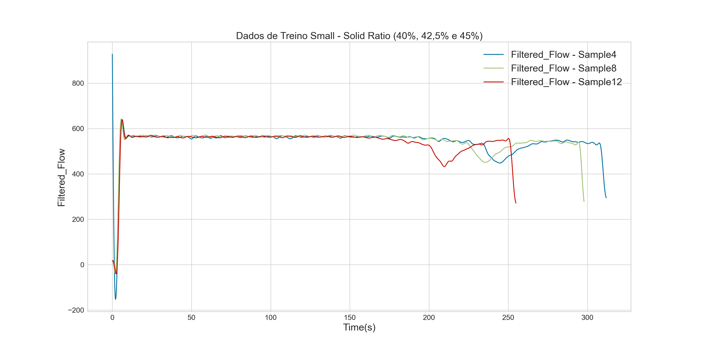
- Gráfico 13
plt.figure(figsize=(20,10))
for value in df_train['Sample'].unique():
if value == 34 or value == 38 or value == 42:
plt.plot(df_train['Time(s)'].loc[df_train['Sample'] == value], df_train['Upstream_Pressure(psi)'].loc[df_train['Sample'] == value], label='Up_Pressure(psi) - Sample'+str(value))
plt.plot(df_train['Time(s)'].loc[df_train['Sample'] == value], df_train['Filtered_Up'].loc[df_train['Sample'] == value], label='Filtered_Up(psi) - Sample'+str(value))
plt.legend(fontsize=20)
plt.xlabel('Time(s)',fontsize=20)
plt.ylabel('Pressure(psi)',fontsize=20)
plt.title('Dados de Treino Large com Filtro - Solid Ratio (40%, 42,5% e 45%)',fontsize=20)
plt.tick_params(labelsize=15)
plt.show()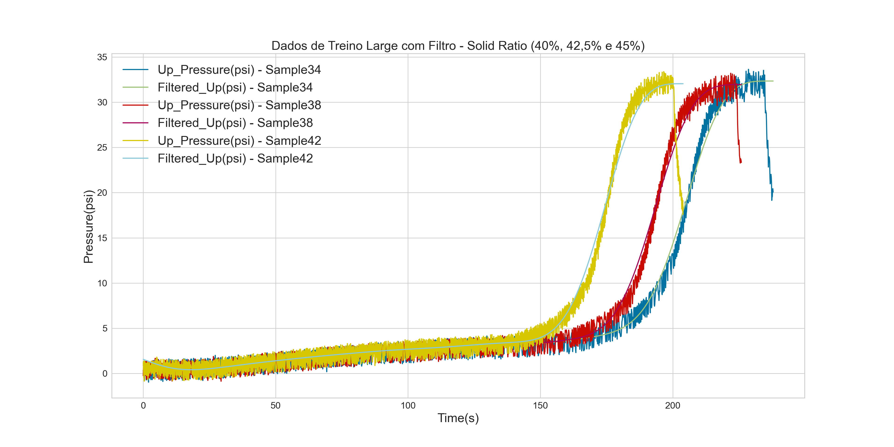
- Gráfico 14
plt.figure(figsize=(20,10))
for value in df_train['Sample'].unique():
if value == 34 or value == 38 or value == 42:
plt.plot(df_train['Time(s)'].loc[df_train['Sample'] == value], df_train['Flow_Rate(ml/m)'].loc[df_train['Sample'] == value], label='Flow_Rate(ml/m) - Sample'+str(value))
#plt.plot(df_train['Time(s)'].loc[df_train['Sample'] == value], df_train['Filtered_Flow'].loc[df_train['Sample'] == value], label='Down_Pressure(psi) - Sample'+str(value))
plt.legend(fontsize=20)
plt.xlabel('Time(s)',fontsize=20)
plt.ylabel('Flow_Rate(ml/m)',fontsize=20)
plt.title('Dados de Treino Large - Solid Ratio (40%, 42,5% e 45%)',fontsize=20)
plt.tick_params(labelsize=15)
plt.show()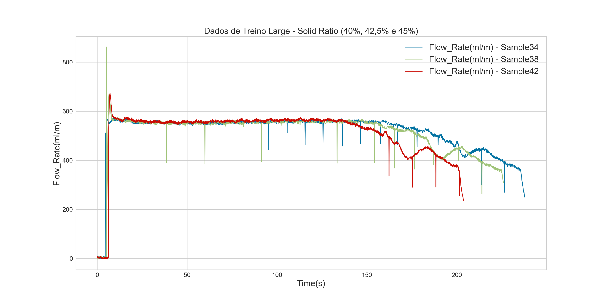
- Gráfico 15
plt.figure(figsize=(20,10))
for value in df_train['Sample'].unique():
if value == 34 or value == 38 or value == 42:
#plt.plot(df_train['Time(s)'].loc[df_train['Sample'] == value], df_train['Flow_Rate(ml/m)'].loc[df_train['Sample'] == value], label='Up_Pressure(psi) - Sample'+str(value))
plt.plot(df_train['Time(s)'].loc[df_train['Sample'] == value], df_train['Filtered_Flow'].loc[df_train['Sample'] == value], label='Filtered_Flow - Sample'+str(value))
plt.legend(fontsize=20)
plt.xlabel('Time(s)',fontsize=20)
plt.ylabel('Filtered_Flow',fontsize=20)
plt.title('Dados de Treino Large - Solid Ratio (40%, 42,5% e 45%)',fontsize=20)
plt.tick_params(labelsize=15)
plt.show()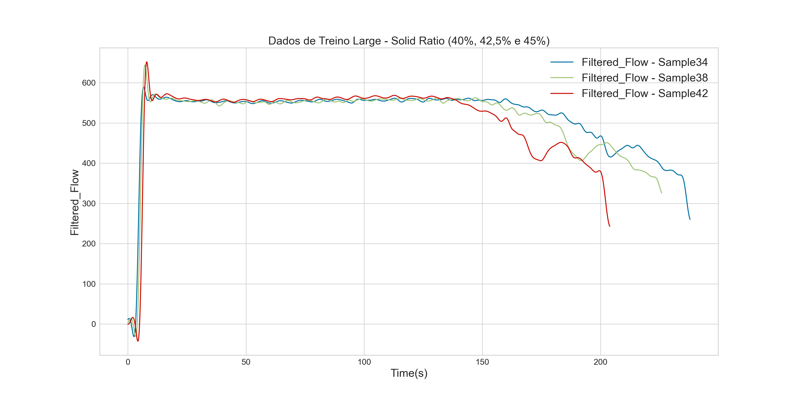
- Gráfico 16
plt.figure(figsize=(20,10))
#sns.set_style('darkgrid')
#sns.set_theme(style="whitegrid")
ax = sns.boxplot(x=df_train["Filtered_Flow"])
plt.title("BoxPlot Filtered_Flow", fontsize = 20)
plt.show(ax)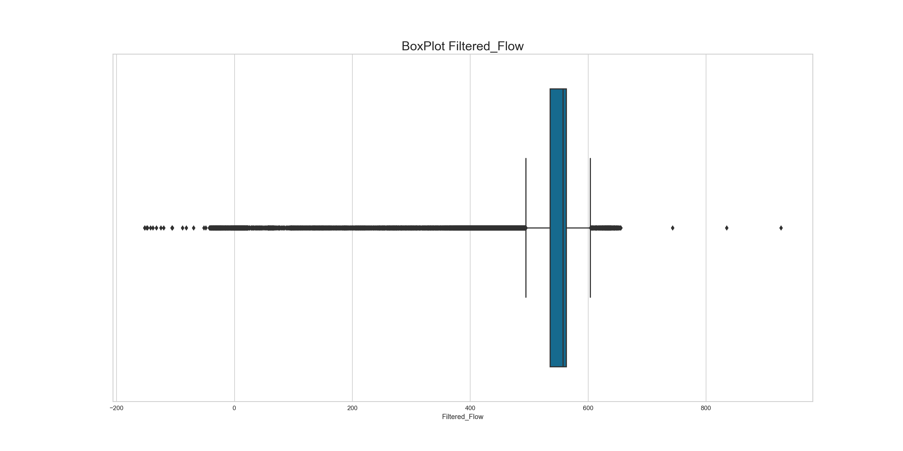
- Gráfico 17
g=sns.lmplot( x="TTF_Filter", y="Solid_Ratio", data=df_train, fit_reg=False, hue='Particle_Large', legend= False)
sns.set_style('darkgrid')
plt.legend(loc= 'upper right', fontsize=20)
plt.title("Time to Fail x Solid Ratio", fontsize=20)
g.fig.set_size_inches(20,10)
plt.show()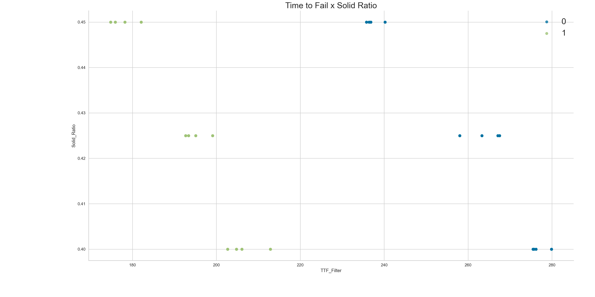
- Gráfico 19
df_cor = (df_train.loc[:,['RUL_Filter','Filtered_Up', 'Clogged_Filter', 'Filtered_Diff', 'Filtered_Down','Filtered_Flow', 'Solid_Ratio']])
plt.figure(figsize=(20,10))
ax = FeatureCorrelation()
ax.fit(df_cor[['Filtered_Up', 'Clogged_Filter', 'Filtered_Diff', 'Filtered_Down','Filtered_Flow', 'Solid_Ratio']],df_cor['RUL_Filter'])FeatureCorrelation(ax=<AxesSubplot:>)In a Jupyter environment, please rerun this cell to show the HTML representation or trust the notebook.
On GitHub, the HTML representation is unable to render, please try loading this page with nbviewer.org.
FeatureCorrelation(ax=<AxesSubplot:>)
plt.title("Correlação com RUL", fontsize = 20)
plt.show(ax)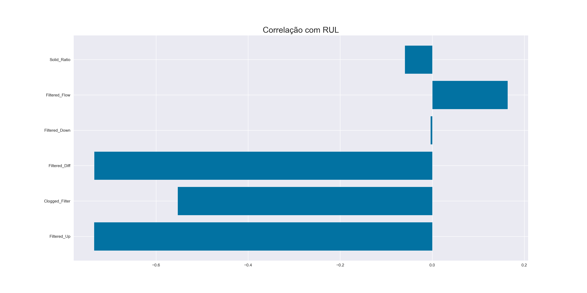
- Gráfico 20
def dual_heat_map(data,figsize=(25,15),dual=True):
sns.set(font_scale=1.1)
corr_pearson=data.corr(method='pearson')
corr_spearman=data.corr(method='spearman')
mask = np.zeros_like(corr_pearson)
mask[np.triu_indices_from(mask)] = True
if dual:
fig, ax = plt.subplots(nrows=1,ncols=2,figsize=figsize)
sns.heatmap(corr_pearson,cmap="coolwarm", linewidths=0.5, annot=True, annot_kws={"size":14},mask=mask,square=True,ax=ax[0],fmt='.2f',cbar=False)
sns.heatmap(corr_spearman,cmap="coolwarm", linewidths=0.5, annot=True, annot_kws={"size":14},mask=mask,square=True,ax=ax[1],fmt='.2f',cbar=False)
ax[0].set_title('Pearson Correlation')
ax[1].set_title('Spearman Correlation')
plt.show()
else:
fig, ax = plt.subplots(nrows=1,ncols=1,figsize=figsize)
sns.heatmap(corr_pearson,cmap="coolwarm", linewidths=0.5, annot=True, annot_kws={"size":14},mask=mask,square=True,fmt='.2f',cbar=False)
ax.set_title('Pearson correlation')
plt.show()
returndual_heat_map(df_cor,figsize=(25,15))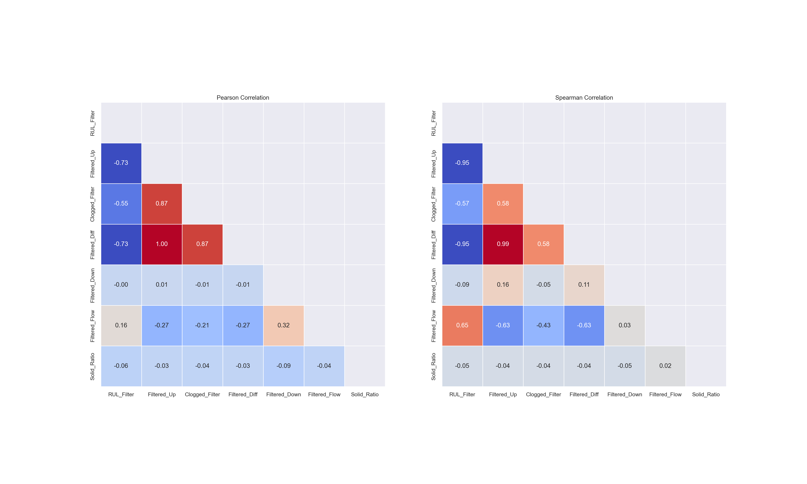